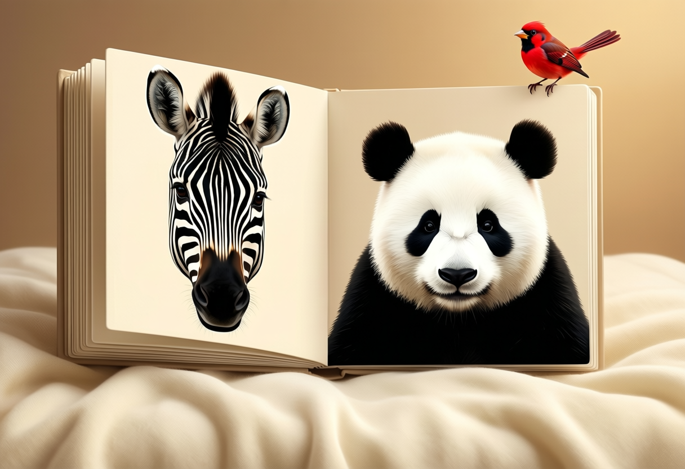
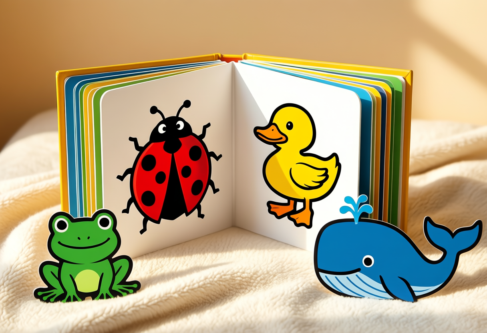
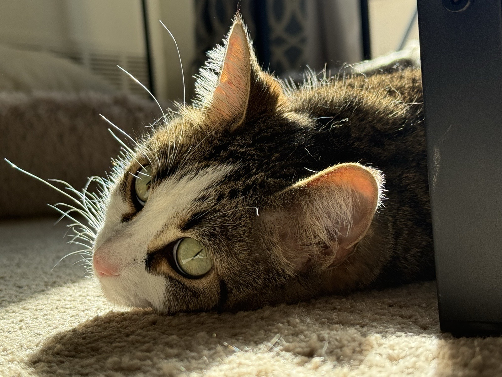
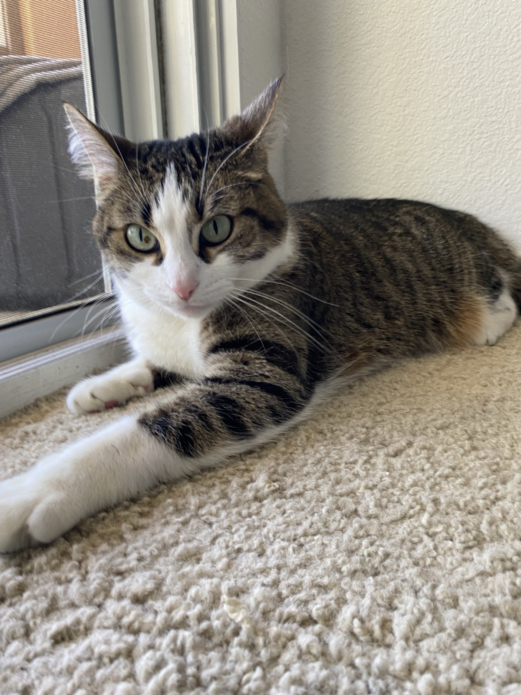

مراتي كان نفسها تبدأ تقرا ليوسف. هو عنده تلات شهور. الكتب اللي كانت عندنا على الرف حلوة، بس مش مناسبة ليه خالص — رسومات ناعمة بألوان باستيل، وجمل طويلة، وصفحات مليانة تفاصيل لسه مش قادر يميزها. فعملتله كتاب على مقاسه: حديقة الحيوان بالأبيض والأسود.

الطفل اللي عنده تلات شهور بيشوف إيه فعلاً
الجزء ده هو اللي غيّر كل قرار في التصميم. الجهاز البصري عند المولود لسه بيتكوّن، وأكتر حاجة بيميزها كويس هي الحواف عالية التباين — أسود صافي على أبيض صافي. الألوان بتيجي ببطء في أول سنة، وبترتيب: الأحمر الأول، وبعده الأصفر والأخضر، والأزرق آخر واحد يظهر. والمسافة اللي بيركّز عليها حوالي 30 cm، تقريباً هي المسافة بين دراعات الأب أو الأم ووشهم.
فالكتاب ده مش كتاب فيه صور وخلاص. ده سلسلة من أتقل وأوضح أشكال قدرت أرسمها، شكل في كل صفحة، بالحجم اللي عينيه تقدر تلقطه.
فصلين
الفصل الأول أبيض وأسود بس — حيوانات علاماتها الحقيقية أصلاً أعلى تباين ممكن، فما احتجتش أغيّر في شكلها عشان أطلّع التباين. والفصل التاني بيعرّفه على لون واحد في كل صفحة، بنفس الترتيب اللي نظره هيلتقطها بيه، وبخطوط سودا تقيلة حوالين الرسمة عشان التباين يفضل شغال لحد ما اللون يبقى مألوف عنده.

بصوتي أنا
كل صفحة ليها صوت. الإنجليزي بـصوتي أنا المستنسخ، نفس صوت ElevenLabs اللي بستخدمه في حلقات بودكاست Wireless 101، والعربي بالصوت اللي بيقرا الدروس العربية هناك. يوسف مش هيفهم كلمة من الاتنين لفترة طويلة، بس هو عارف صوت أبوه وأمه من دلوقتي، وده المهم في سن تلات شهور.
التسجيل بيناديه باسمه — على الغلاف، وتاني في صفحة تصبح على خير، باللغتين. وفي خانة على الغلاف تغيّر بيها الاسم، لأي حد عايز يقراه لطفله.
اتبنى إزاي
الموضوع كله ملف HTML واحد وفولدر صوتيات. من غير framework ولا build step ولا dependencies غير خطين — نفس القيد اللي ماشي بيه في كل حاجة هنا، وده السبب إنه هيفضل يفتح بعد عشر سنين، لما يكبر كفاية إنه يتكسف منه.
الرسم SVG مكتوب باليد. كل حيوان شوية دواير وأشكال بيضاوية ومسارات، وطلع ده الوسيط المناسب للشغلانة: الأشكال اللي المولود يقدر يميزها هي بالظبط الأشكال البسيطة اللي ينفع تتكتب باليد. الحمار الوحشي راس بيضا وخمس شرايط سودا وعينين. وأي تفاصيل زيادة كانت هتضيع عليه أصلاً.
الصوت اتولّد بـ ElevenLabs Eleven v4 — وفي تفاصيل أكتر عن الـ voice pipeline، ومقارنة بين المحلي والـ cloud باستخدام الكتاب ده، في توليد الصوت من النص بموديلات محلية. الدرس الوحيد اللي مش بديهي فعلاً: الـ text‑to‑speech بيبوظ لما تديله صوت الحيوان لوحده. في أول محاولة للأصوات رفعت الـ expressiveness عالي وادّيت الموديل كلمات زي Grrrrrr وMooooooo، والنتيجة رجعت مرتعشة ومش مفهومة. الكلام اللي مالوش معنى مش بيدي الموديل أي سياق لغوي يشتغل عليه. لما لفّيت كل صوت في جملة قصيرة — "the cow says moo" — ونزّلت إعداد الـ style، المشكلة اتحلت خالص.
الصور في الصفحة دي اتولّدت محلي، على الـ Mac Studio اللي شغّال عليه محرك الـ AI الشخصي بتاعي — Qwen‑Image من خلال draw-things-cli، من غير أي خدمة cloud. ونفس الموديلات رسمت مجموعة تانية من الرسومات للكتاب نفسه، رسمة لكل صفحة، وفي زرار في الشريط اللي فوق تبدّل بينهم: الرسم باليد والصور المتولّدة. الكتاب بيفتح على الرسم باليد بقصد — لطفل عنده تلات شهور الأشكال المسطّحة حادة الحواف هي فعلاً الكتاب الأحسن. والصور المتولّدة لبعدين، لما يبقى يشوف التفاصيل.
الحدوتة التانية: سوسو
الكتاب التاني حكاية حقيقية. سوسو القطة هي حكاية قطتنا، متحكية كأنها حكاية يوسف كمان، لأنها كانت هنا قبله بكتير.

الصورتين اللي فوق وتحت هم الاتنين ليها، بينهم سنين: الأولى عند شباك في أوكلاهوما والتلج برا، والتانية في شمس كاليفورنيا. اتبنّت في أوكلاهوما، أيام الدكتوراه، في شتا بعيد عن الكل. فترة كانوا هما الاتنين ومكتب مليان ورق. وبعدين الكتب اتحطت في كراتين وهي سافرت عبر البلد كلها لكاليفورنيا. وبعدين ماما جت، والبيت اتملا أكتر. وبعدين يوسف جه، وسوسو اتسحبت لحد سرير البيبي وعيّنت نفسها في وظيفة مراقبته.

مفيش أي تواريخ في الكتاب. الطفل مالوش دعوة بالسنين، وشكل الحدوتة — وبعدين، وبعدين، وبعدين — هو الجزء اللي يقدر يمشي وراه فعلاً.
صفحة الرحمة
في صفحة واحدة بتخرج بره حكاية العيلة. بتحكي، بكلمات طفل صغير يقدر يستوعبها، حديث المرأة اللي اتعذبت بسبب قطة حبستها من غير أكل ولا مية. والحديث بنصه الكامل موجود في ملاحظة الكبار في الصفحة دي، مع مصادره، ومعاه الحديث التاني — الراجل اللي اتغفرله لما سقى كلب عطشان من بير.
مكانها في الكتاب ده مش في كتاب دروس. الطفل اللي بيسمعها عنده قطة في البيت، وهييجي يوم يبقى كبير كفاية يملا طبقها. الرحمة بالحيوان أسهل ما تتعلّم في المكان اللي بتحصل فيه فعلاً، في الحاجة العادية اللي بتحصل كل يوم: إننا بنأكّل القطة.
زي الكتاب الأول، هو بلغتين وفيه تسجيل صوتي على كل صفحة، وفيه مجموعتين الرسومات ورا نفس الزرار: سوسو مرسومة بـ SVG من صورتها، وسوسو زي ما موديلات الصور المحلية تخيّلتها.
أربع كتب لطفل مسلم
وبعدها جت أربع كتب تانية، وهي أول كتب اتكتبت عشان تعلّم حاجة مش عشان تعرض حاجة. بسم الله بتحط لحظة عادية في كل صفحة — الصحيان، الغسيل، الأكل، الخروج، الرجوع للبيت — وبتفتح كل واحدة بنفس الكلمة. الحمد لله يا صغيري بتسمّي تمان حاجات بسيطة هو عنده فعلاً: إيدين، وعينين، وصوت ماما، وعيش دافي، ومية باردة، والمطر، والقطة، وسرير دافي. الله خلقها بتسأل نفس السؤال عن السما والبحر والنخلة والنحلة والعصفور والقطة والقمر والمطر، وبتدّي نفس الإجابة كل مرة. نبينا هي تمان حاجات لطيفة كان بيحبها، صلى الله عليه وسلم.
التكرار هو التصميم كله. الطفل مش بيتعلم كلمة من إنه يقابلها مرة واحدة جوه جملة. بيتعلمها لما يسمعها نازلة في نفس المكان، بنفس الصوت، صفحة ورا صفحة. فكل واحد من الأربعة سطر واحد متكرر عشر مرات، والمنظر بيتغير حواليه.
اللي مش في الصور
مفيش أي تصوير للنبي صلى الله عليه وسلم في أي مكان في الكتاب الرابع ده، ولا هيكون أبداً. الصفحات بتعرض اللي كان بيحبه بدل كده: أطفال بيلعبوا، وقطة بتشرب من طبق، وطبق تمر وكوباية لبن، وزير مية من الفخار، وعيش ممدود في إيدين، وفانوس وعباية مطوية. هو بيتعرف بأفعاله، وده الشبه الأصدق على أي حال — وهو الشبه اللي الطفل يقدر يمشي وراه فعلاً. وملاحظة الكبار على الغلاف بتقول كده باللغتين، فالسبب بيسافر مع الكتاب.
رسومات الأربعة كلها اتولّدت محلي، والـ prompts فيها قايمة ثابتة من الممنوعات: مفيش أصنام ولا تماثيل ولا صلبان ولا كنايس ولا خنازير ولا كحول ولا لبس غير محتشم. وكمان بتمنع الخط العربي، لأن موديلات الصور بتطلّع عربي مالوش معنى، والعربي اللي مالوش معنى في كتاب زي ده أسوأ من إنه ميبقاش موجود. وبعدين اتراجعت كل صورة من الأربعين. تلاتة اتشالوا واتعملوا من جديد: طفل قاعد على الهلال في صفحة عن خلق القمر الحقيقي، وصفحة عنوانها المطر مفيهاش مطر، وطفل لابس حفاضة بس.
طباعتها ككتب مقوّاة
الطفل اللي عنده تلات شهور بيقرا بإيديه وببقه، فالورق مش الخامة المناسبة. كل كتاب دلوقتي ليه نسخة مقوّاة: مربعة 180mm بـ bleed وعلامات قص، المفروض تتطبع على وش واحد على كرتون 300–350gsm، وتتغلّف سلوفان، وتتلزق ضهر لضهر عشان كل ورقة تبقى لوح مقوّى بجد. دوّر الأركان على 10mm — أركان الكرتون المربعة على 350gsm حادة فعلاً على الارتفاع ده.
كل غلاف عليه QR code بيفتح النسخة المسموعة على الموبايل، فأي حد ماسك النسخة المطبوعة يقدر يشغّل نفس الصوت وهو بيقرا. أربعة وعشرين PDF إجمالاً: A5 ومقوّى، رسم باليد وصور متولّدة، لستة كتب.
في درس من بناء الكتب دي يستاهل يتكتب. الصفحة اللي كلامها بيعدّي آخرها بتتقصّ من غير ما حد ياخد باله، والـ PDF شكله طبيعي خالص — كنت قربت أطبع صفحة من سوسو ناقصها آخر سطر عربي. وطلع إن عدد الحروف مقياس وحش، لأن الـ line wrapping هو اللي بيحسم فعلاً. الحل كان إني أبطّل تخمين: أحمّل كل ملف طباعة في المتصفح وأسأله آخر سطر نص واقع فين بالظبط. صفحة واحدة كانت بتتقصّ عند 184 حرف، والحد كان 260.
سلسلة، مش كتاب
ستة لحد دلوقتي. الخطة إني أفضل أضيف كتب كل ما يكبر، كل كتاب على قد اللي بيتعلمه وقتها: الأشكال والوشوش بعد كده، وبعدها أول كلمات، وبعدها العد، وبعدها حواديت ليها بداية ونهاية صح. وهتفضل هنا، جنب كل حاجة تانية بعملها، والصفحة دي هتكبر معاها.
لو عندك طفل في نفس السن، افتحها واكتب اسم طفلك على الغلاف. ببلاش، وبتشتغل من غير نت بعد ما تتحمّل، ومش محتاج تعمل فيها حساب.
كله متاح للكل: الستة كتب، وتسجيلاتهم، ومجموعتين الرسومات، وسكريبتات التوليد، والأربعة وعشرين PDF الجاهزين للطباعة موجودين في github.com/hisham-abuella/bedtime-stories، والـ repo نفسه منشور على hisham-abuella.github.io/bedtime-stories — وده اللي الـ QR code على كل غلاف مطبوع بيشاور عليه.